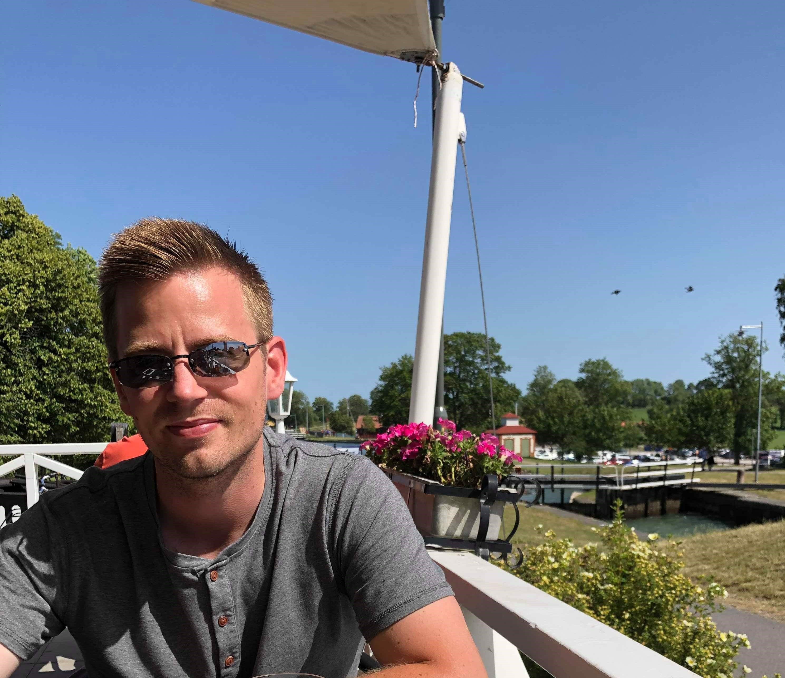
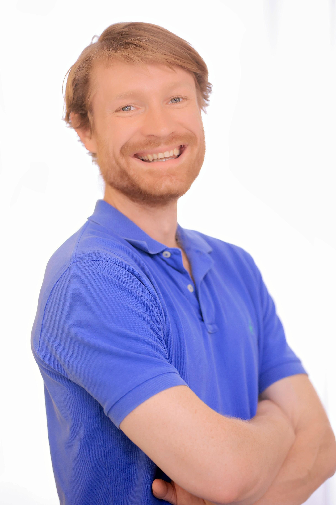

Making a promising idea concrete.
We work with leaders and stakeholders to identify where AI could genuinely improve a workflow, what human judgment must stay close to the work, and what a responsible first experiment would require.
AI promises to upend established ways of doing business, but few organizations have the capacity to juggle both the latest AI advancements and their own business priorities. Balansa bridges that gap.
We help leaders chart the right course. In our work, people come first: human knowledge, capabilities, and personalities are the bedrock of sustainable success.
Meet the people behind the work →We are thoughtful about how our choices impact others.
Work exists in service of our responsibilities to other people.
You control what you choose to do with it and how you use it.
We hold ourselves accountable, but accept that we are not perfect.

PhD in AI, Northwestern University
Alex focuses on designing and evaluating AI systems for safe, responsible human impact. He is currently a knowledge engineer at an AI startup in Chicago.
Master's in Psychology, Columbia University
Tessa is a director of thought leadership at PMI, where she helps clients turn people insights into action that builds team alignment and unlocks organizational potential.

MS in AI, Northwestern University
Harper leads experiential learning in applied AI at Northwestern University. He has developed and consulted on AI applications in law, healthcare, and education.
We work with leaders and stakeholders to identify where AI could genuinely improve a workflow, what human judgment must stay close to the work, and what a responsible first experiment would require.
We help teams translate what they know about their people into a shared direction, practical decisions, and the conditions for new ways of working to take hold.